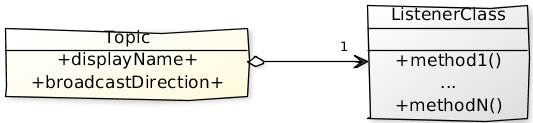
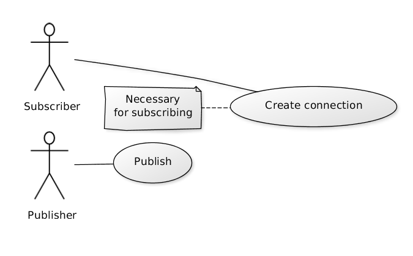
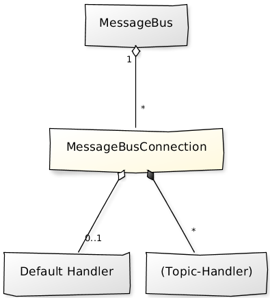
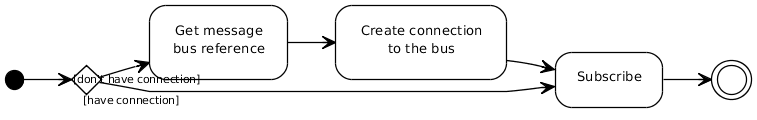
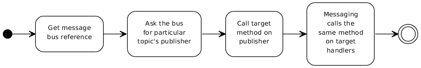
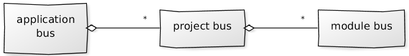
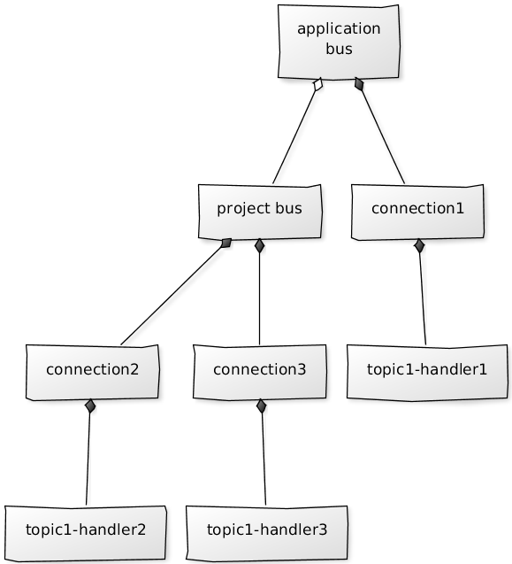
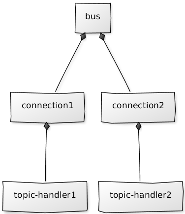

Messaging infrastructure
Purpose
The purpose of this document is to introduce the messaging infrastructure available in the IntelliJ Platform to developers and plugin writers. It is intended to answer why, when and how to use it.
Rationale
So, what is messaging in the IntelliJ Platform and why do we need it? Basically, its implementation of Observer pattern that provides additional features like broadcasting on hierarchy and special nested events processing (nested event here is a situation when new event is fired (directly or indirectly) from the callback of another event).
Design
Here are the main components of the messaging API.
Topic
This class serves as an endpoint at the messaging infrastructure. I.e. clients are allowed to subscribe to the topic within particular bus and to send messages to particular topic within particular bus.

- display name just a human-readable name used for logging/monitoring purposes;
- broadcast direction will be explained in details at Broadcasting. Default value is TO_CHILDREN;
- listener class that is a business interface for particular topic. Subscribers register implementation of this interface at the messaging infrastructure and publishers may later retrieve object that conforms (IS-A) to it and call any method defined there. Messaging infrastructure takes care on dispatching that to all subscribers of the topic, i.e. the same method with the same arguments will be called on the registered callbacks;
Message bus
Is the core of the messaging system. Is used at the following scenarios:

Connection
Manages all subscriptions for particular client within particular bus.

-
keeps number of topic handler mappings (callbacks to invoke when message for the target topic is received) Note: not more than one handler per-topic within the same connection is allowed;
-
it’s possible to specify default handler and subscribe to the target topic without explicitly provided callback. Connection will use that default handler when storing (topic-handler) mapping;
-
it’s possible to explicitly release acquired resources (disconnect() method). Also it can be plugged to standard semi-automatic disposing (
Disposable);
Putting altogether
Defining business interface and topic
public interface ChangeActionNotifier {
Topic<ChangeActionNotifier> CHANGE_ACTION_TOPIC = Topic.create("custom name", ChangeActionNotifier.class)
void beforeAction(Context context);
void afterAction(Context context);
}
Subscribing

public void init(MessageBus bus) {
bus.connect().subscribe(ActionTopics.CHANGE_ACTION_TOPIC, new ChangeActionNotifier() {
@Override
public void beforeAction(Context context) {
// Process 'before action' event.
}
@Override
public void afterAction(Context context) {
// Process 'after action' event.
}
});
}
Publishing

public void doChange(Context context) {
ChangeActionNotifier publisher = myBus.syncPublisher(ActionTopics.CHANGE_ACTION_TOPIC);
publisher.beforeAction(context);
try {
// Do action
// ...
} finally {
publisher.afterAction(context)
}
}
Existing resources
-
MessageBus instances are available via
ComponentManager.getMessageBus()(many standard interfaces implement it, e.g.Application,Project; -
number of public topics are used by the IntelliJ Platform, e.g.
AppTopics,ProjectTopicsetc. So, it’s possible to subscribe to them in order to receive information about the processing;
Broadcasting
Message buses can be organised into hierarchies. Moreover, the IntelliJ Platform has them already:

That allows to notify subscribers registered in one message bus on messages sent to another message bus.
Example:

Here we have a simple hierarchy (application bus is a parent of project bus) with three subscribers for the same topic.
We get the following if topic1 defines broadcast direction as TO_CHILDREN:
- A message is sent to topic1 via application bus;
- handler1 is notified about the message;
- The message is delivered to the subscribers of the same topic within project bus (handler2 and handler3);
Benefits
We don’t need to bother with memory management of subscribers that are bound to child buses but interested in parent bus-level events.
Consider the example above we may want to have project-specific functionality that reacts to the application-level events. All we need to do is to subscribe to the target topic within the project bus. No hard reference to the project-level subscriber will be stored at application-level then, i.e. we just avoided memory leak on project re-opening.
Options
Broadcast configuration is defined per-topic. Following options are available:
-
TO_CHILDREN (default);
-
NONE;
-
TO_PARENT;
Nested messages
Nested message is a message sent (directly or indirectly) during another message processing. The IntelliJ Platform’s Messaging infrastructure guarantees that all messages sent to particular topic will be delivered at the sending order.
Example:
Suppose we have the following configuration:

Let’s see what happens if someone sends a message to the target topic:
-
message1 is sent;
-
handler1 receives message1 and sends message2 to the same topic;
-
handler2 receives message1;
-
handler2 receives message2;
-
handler1 receives message2;
Tips’n’tricks
Relief listeners management
Messaging infrastructure is very light-weight, so, it’s possible to reuse it at local sub-systems in order to relief Observers construction. Let’s see what is necessary to do then:
-
Define business interface to work with;
-
Create shared message bus and topic that uses the interface above (shared here means that either subject or observers know about them);
Let’s compare that with a manual implementation:
-
Define listener interface (business interface);
-
Provide reference to the subject to all interested listeners;
-
Add listeners storage and listeners management methods (add/remove) to the subject;
-
Manually iterate all listeners and call target callback in all places where new event is fired;
Avoid shared data modification from subscribers
We had a problem in a situation when two subscribers tried to modify the same document (IDEA-71701).
The thing is that every document change is performed by the following scenario:
-
before change event is sent to all document listeners and some of them publish new messages during that;
-
actual change is performed;
-
after change event is sent to all document listeners;
We had the following then:
- message1 is sent to the topic with two subscribers;
- message1 is queued for both subscribers;
- message1 delivery starts;
- subscriber1 receives message1;
- subscriber1 issues document modification request at particular range (e.g. document.delete(startOffset, endOffset));
- before change notification is sent to the document listeners;
- message2 is sent by one of the standard document listeners to another topic within the same message bus during before change processing;
- the bus tries to deliver all pending messages before queuing message2;
- subscriber2 receives message1 and also modifies a document;
- the call stack is unwinded and actual change phase of document modification operation requested by subscriber1 begins;
The problem is that document range used by subscriber1 for initial modification request is invalid if subscriber2 has changed document’s range before it.